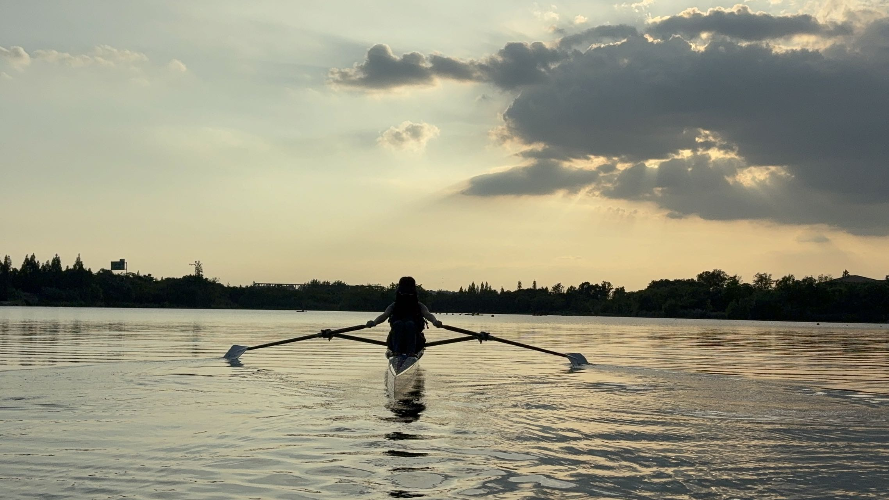

Finding My Stroke,
Finding My Balance
I started rowing in Grade 10, guided by a world champion coach who showed me the beauty of the sport. With every stroke, I discovered a sense of rhythm and balance — not just on the water, but within myself. Rowing brings out the quieter side of me. There's something magical about gliding across still water, watching each stroke send ripples through the silence.

Tennis
I picked up tennis in Grade 5, though “picked up” might be a stretch — my parents practically dragged me to practice twice a week. Somewhere along the way, tennis became part of my routine. When high school got busy, my parents surprisingly offered to let me quit and focus on academics. Plot twist: this time, I was the one who refused.
What started as an obligation became something I couldn't let go of. Passion can be a heavy rock. Putting it down might be easier, but I choose to pick it up, again and again.
Small Strokes,
Big Lessons
What has sports taught me? The simplest lesson: you get out what you put in. Stroke after stroke, day after day. The movements seem simple — because they are. Even the most complex skills begin with mastering the basics. Life works the same way.